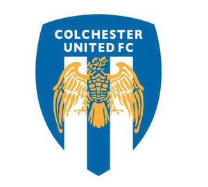

Trade Mark Journal No.2025/048 28 November 2025
UK00004296092 17 November 2025 (6,9,14,16,18,20,21,24,25,28,41)

- Class 6
- Common metals and their alloys; small items of metal hardware; ores; badges of metal for vehicles.
- Class 9
- Sound recording and sound reproducing instruments and apparatus, and parts and fittings for all the aforesaid goods; gramophone records and magnetic tapes for recording or reproducing sound or vision; photographic transparencies and photographic films prepared for exhibition purposes; computer games; computer programs; motion picture films; pre-recorded magnetic tapes, discs and cassettes; records, tapes, cassettes and videos; sun glasses, spectacles and cases therefor.
- Class 14
- Precious metals and their alloys; key rings and key fobs made of plastic; jewellery, precious stones; horological and chronometric instruments; electric alarm clocks; clocks; watches; cufflinks; jewellery and imitation jewellery; watches and clocks; tie-clips, tie pins, cuff-links, key rings medals and medallions; badges of precious metal; lapel badges of precious metal; metal badges for wear; fobs for keys; jewellery articles made of precious metal or coated therewith.
- Class 16
- Printed matter; paper articles; cardboard articles; tickets, periodical publications; books; photographs; post cards; stationery, playing cards; printed programmes; stickers; flags.
- Class 18
- Leather and imitations of leather; animal skins, hides; handbags, rucksacks, purses; umbrellas, parasols and walking sticks; canes; clothing for animals; key cases; trunks and travelling bags; umbrellas and walking sticks; sports bags, cases, bags; holdalls, wallets, belts, purses.
- Class 20
- Exhibition boards; display units for exhibition purposes; plastic name badges; novelty badges (non-metallic-) for vehicles; pillows and cushions.
- Class 21
- Small domestic utensils and containers (not of precious metal or coated therewith); glassware; porcelain and earthenware; mugs not of precious metal; cups, saucers, plates.
- Class 24
- Textile articles; table cloths, table mats; wall hangings of textile; pillowcases, sheets, bedspreads; cloth; flags and pennants not of paper; banners.
- Class 25
- Clothing, footwear, headgear; sportswear; socks; sandals; belts [clothing]; bibs, not of paper; boots for sports; cap peaks; caps [headwear]; clothing of imitations of leather; football boots; leg warmers; leggings [trousers]; tracksuits; socks; sports shoes; stockings; studs for football boots; tee-shirts; underwear; waterproof clothing.
- Class 28
- Games (other than ordinary playing cards); toys; sporting articles (other than clothing); play balls; balls; footballs; balls for games.
- Class 41
- Entertainment; sporting and cultural activities; education services; providing of training; Organisation of sporting events; provision of sports information services; provision of video entertainment; provision of sporting, gymnastic and recreational facilities; football coaching, football schools and schooling; education and training in relation to football; instructional courses; sporting management services for footballers; football entertainment services; organisation of competitions and events; rental of sporting equipment; health club services; entertainment services; arranging and conducting of sports exhibitions, fairs, seminars, symposia and events; sports information services; sports booking services; information, advisory and consultancy services relating to the aforesaid services; fan club services; museum services; hospitality services; information, consultancy and advice in relation to the foregoing services; all the foregoing services also available from computer databases, the Internet or via other communications.
Colchester United Football Club Limited
Representative: Birketts LLP